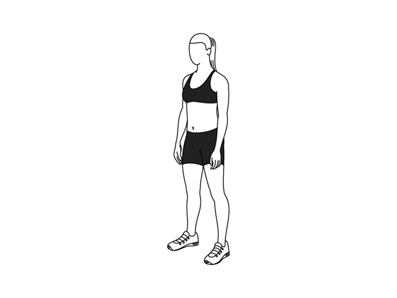

0
squats left to continue

SSD Mobilenet V1
Tiny Face Detector
Select Face Detector
Time:
Estimated Fps:
Min Confidence:
-
+
Input Size:
128 x 128
160 x 160
224 x 224
320 x 320
416 x 416
512 x 512
608 x 608
Input Size
Score Threshold:
-
+